| Data | Type | Description…Remarks | Source |
|---|---|---|---|
| Vietnam Subnational Administrative Boundary | .shp | The administrative boundary consists of 3 levels. 0- country level, 1- Province level, 2- district. | https://data.humdata.org/dataset/cod-ab-vnm? |
| Vietnam PCI indicator | .csv | PCI indicator consists of different factors that help gauge the performance of provinces. The site offers yearly PCI data. | https://pcivietnam.vn/en/pci-data |
Project: CrimeWatch Vietnam Law and Order Geosptial Analysis
THEME: GEOGRAPHIC SEGMENTATION
1 ABSTRACT
This project involves 3 main segments, mainly, conducting Exploratory Spatial Data Analysis, Geographical Segmentation with Spatially Constrained Clustering Techniques, and Local Indicators of Spatial association techniques using the Provincial Competitiveness Index of Vietnam. Specifically, we will analyze the “law and order” dataset to reveal preliminary findings, segment the various provinces in Vietnam as well as identify cold and hotspots amongst the province of Vietnam. The goal of the project is to create a web application that aims to aid users in performing exploratory data analysis, hierarchy cluster analysis, spatially constrained clustering, spatially contained clustering, and cold/hotspot analysis. The web application users can effortlessly analyze the data by adjusting variable inputs without needing any technical knowledge or expertise in data wrangling, allowing them to make useful insights from their findings
2 Problem & Motivation
The legal system of Vietnam is based on the socialism legal theory and inherited from French civil law system. However, data shows that the enforcement of these laws and regulations can differ depending on the province. This sparked our interest to investigate the reason behind this phenomenon by using clustering methods to visualise patterns within the provinces.
Geospatial analytics in R allows us to manipulate and analyse data visually so that we can uncover patterns that may otherwise go unnoticed. However, geospatial analytics requires users to be experienced and seasoned in finding data on the internet and it can be tedious to wrangle with the data to the right format for processing. This interactive web application allows users to carry out analysis simply through interacting with the user interface so that even business users can operate. By providing an interactive consolidated platform for users to view data and corresponding analyses, we make the data easily accessible while still allowing for customization through the user interface. Exploratory Spatial Data Analysis, we can investigate the dataset and summarize their main characteristics. It aims to provide us a sense of how “good” or “bad” our dataset is, allowing us to make more logical conclusions based on the findings.
The Clustering technique is crucial to allow us to realize how similar or dissimilar a group or a point of data is compared to others. This important information can allow users to do audience segmentation. Lastly, the cold/hotspot analysis helps to reinforce the findings of the clustering analysis and helps user to better visualize these clusters based on their densities.
3 Project Objectives
Interactive user interface design
Conduct exploratory data analysis using correlation analysis, histograms, boxplots, and box maps for preliminary analysis.
Conduct hierarchy cluster analysis using the SKATER approach, Hierarchical Clustering, and ClustGeo method.
Conduct LISA cold/hotspot analysis using Moran’s I method.
4 Data Sets and Descriptions
5 Data Preparation and Diagram flow
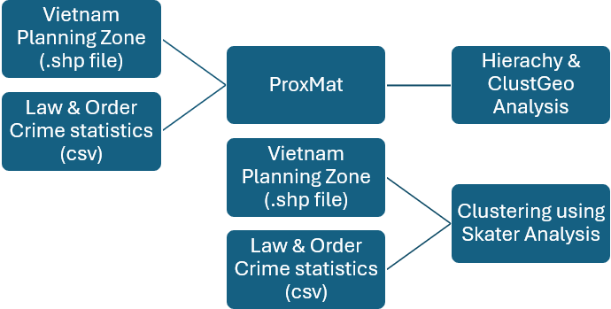
6 Literature Review
Title: An R package for hierarchical clustering with spatial constraints
Source: https://arxiv.org/pdf/1707.03897.pdf
Summary: In this paper, the authors propose a ward-like hierarchical clustering algorithm including spatial constraints. The dissimilarities can be non-euclidean and the weights of the observations can be non uniform.
Learning points: When trying to carry out Hierarchical clustering, we need to have a dissimilarity matrix D of class dist. It is important for us to alter or transform our matrix to an appropriate data type for the function to work properly. The highlight of the paper is the calculation and algorithms used to do clustering.
Title: Cluster Analysis and Segmentation
Source: https://inseaddataanalytics.github.io/INSEADAnalytics/
CourseSessions/Sessions45/ClusterAnalysisReading.html#step_8:_robustness_analysis
Summary: In Data Analytics we often have very large data (many observations - “rows in a flat file”), which are however similar to each other hence we may want to organize them in a few clusters with similar observations within each cluster. For example, in the case of customer data, even though we may have data from millions of customers, these customers may only belong to a few segments: customers are similar within each segment but different across segments. We may often want to analyze each segment separately, as they may behave differently.
Learning points: Much like any data analysis, segmentation is an iterative process with many variations of data, methods, number of clusters, and profiles generated until a satisfying solution is reached. The paper discusses examples on how to test the statistical robustness and stability of interpretation of clusters found using 2 different approaches.
7 Methodology
7.1 Data Preparation
Data sources from online platforms
Importing spatial data into the R environment
Data wrangling
7.2 Exploratory Data Analysis
Plotting up graphs for visualization and better understanding of the data
Histogram - Visualize the distribution of data by bins each representing a range of data values
Percentile Map - A quantile map to visualize the distribution of data on a map
Box-plot - Visualize the distribution of data by graphically depicting groups of data through their quartiles
Box Map - An augmented quantile map with an additional lower and upper category to visualize the distribution of the data on a map
7.3 Exploratory Spatial Data Analysis
Visualize spatial data and examine the spatial distribution of data points
- LISA - Identify spatial clusters or patterns of similarity and dissimilarity
7.4 Geographical Segmentation with Spatially Constrained Cluster Analysis
Divide a target market by location to allow marketers to better serve customers in a particular area
Hierarchy Cluster Analysis - Classify objects into clusters based on similarity or dissimilarity.
Spatially Constrained Clustering: SKATER approach - Uses spatial proximity to identify spatial patterns
Spatially Constrained Clustering: CLUSTGEO method - Partition spatial data into cluster base on attribute similarity and spatial contiguity.
8 Storyboard
In this section, we delve into the intricate process of ideation and its indispensable companion, initial prototyping. Here, we recognize the paramount importance of prototyping as the bridge between conception and realization, the tool through which ideas are refined, tested, and ultimately perfected. Join us as we navigate through the meticulous craft of ideation, and witness firsthand the transformative power of prototyping in bringing visionary concepts to fruition.We look into the depths of our project to determine what sort of design we’ll strive towards.
8.1 Initial Prototype
8.1.1 EDA Histogram
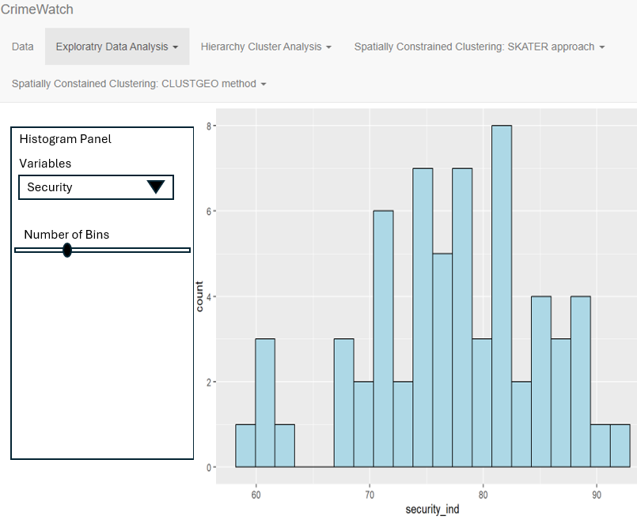
8.1.2 EDA Box Plot
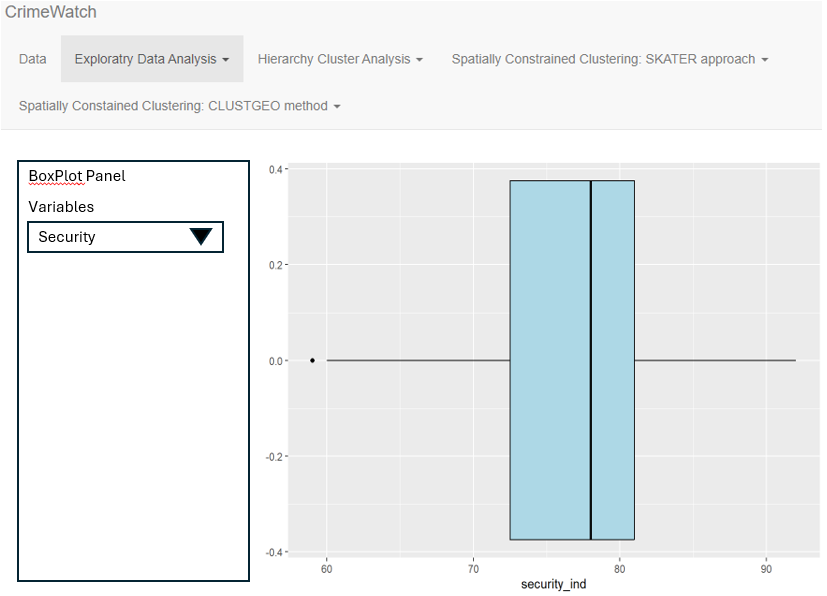
8.1.3 Hierarchical Clustering
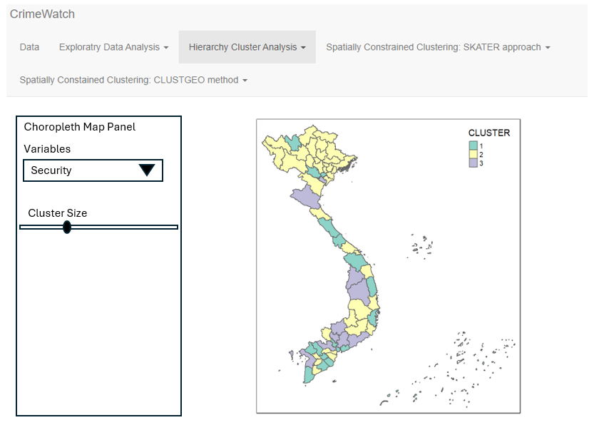
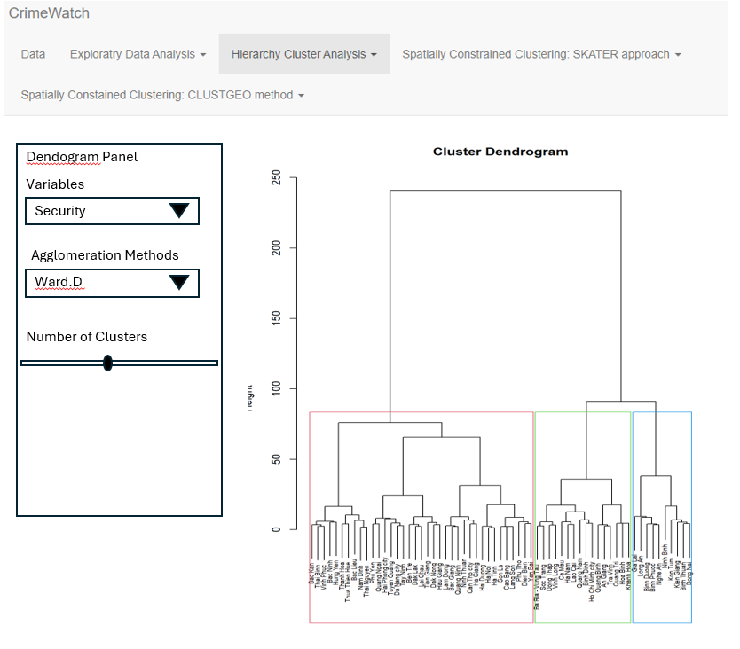
8.1.4 SKATER
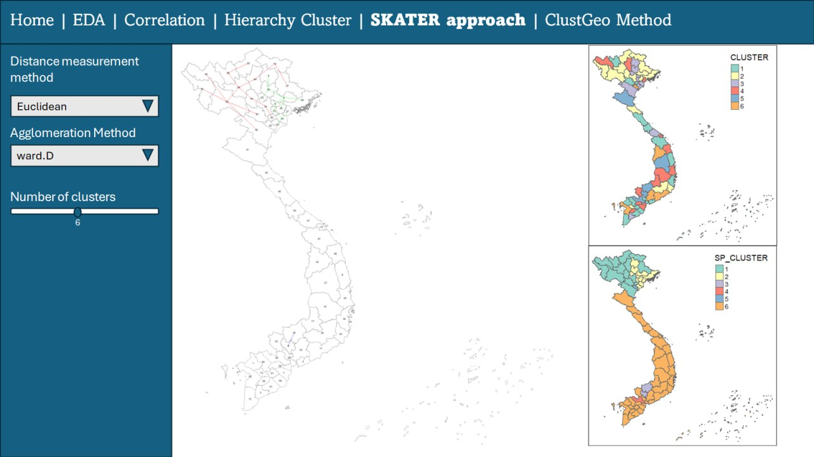
8.1.5 ClustGeo
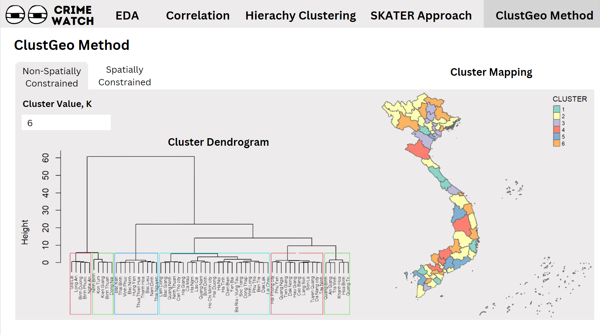
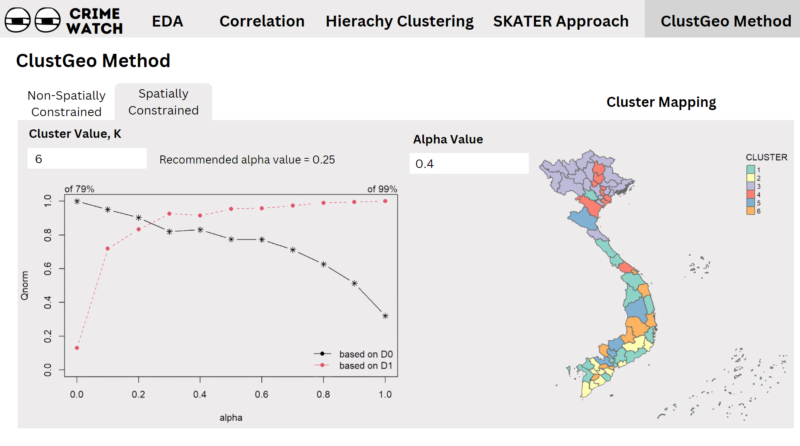
8.2 Finalise Prototype
8.2.1 EDA Page Histogram
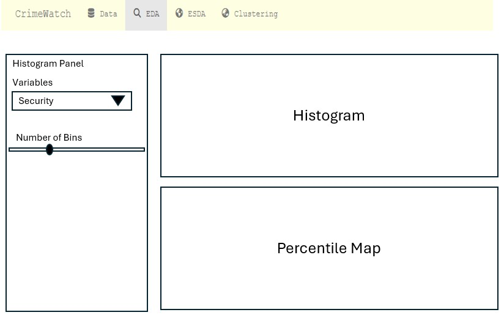
8.2.2 EDA Page Box Plot
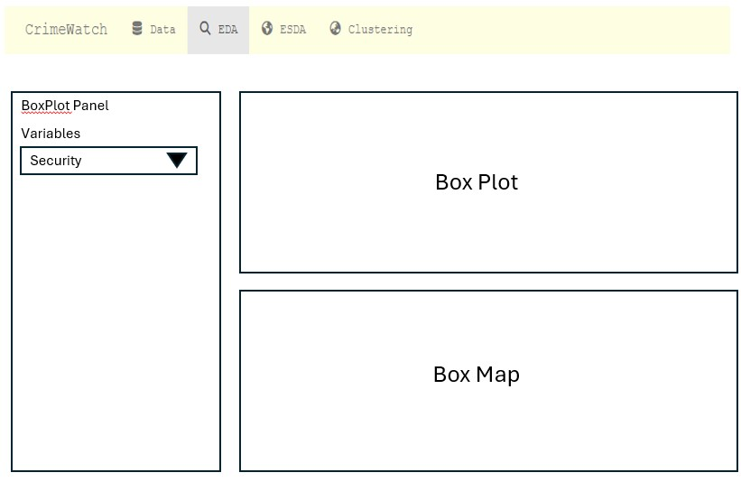
8.2.3 ESDA
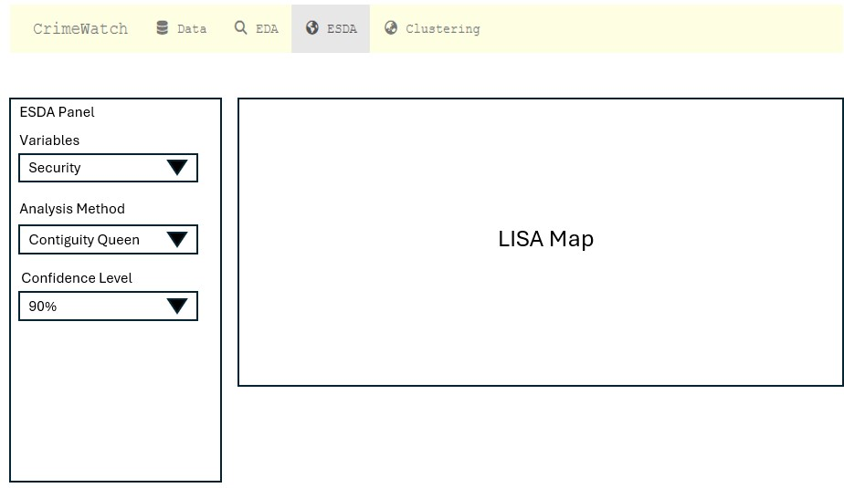
8.2.4 Clustering
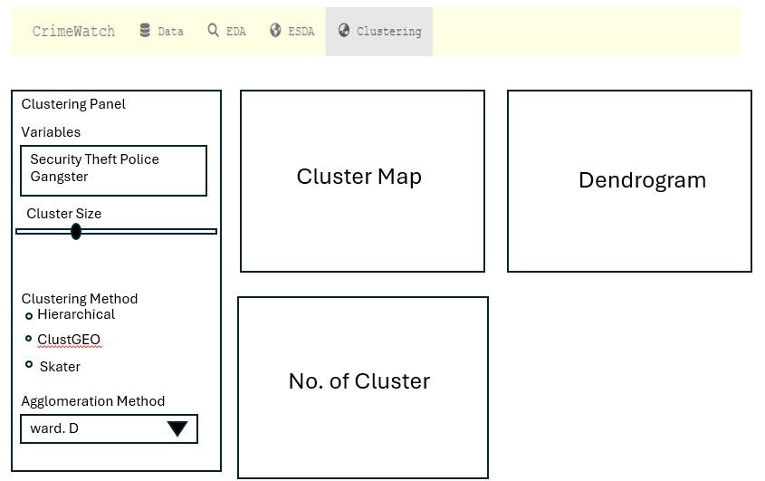
9 Application architecture
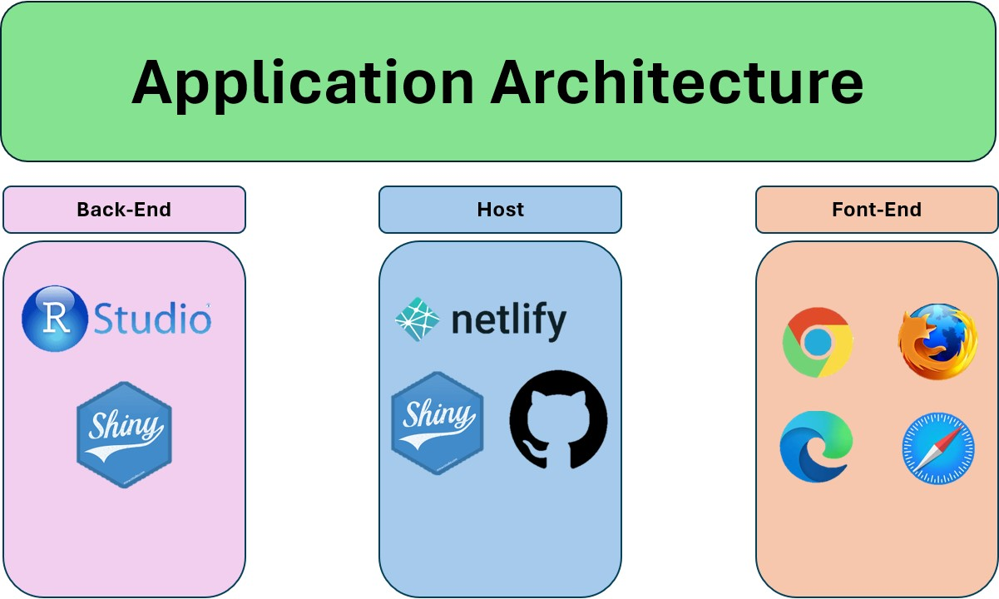
10 Project timeline
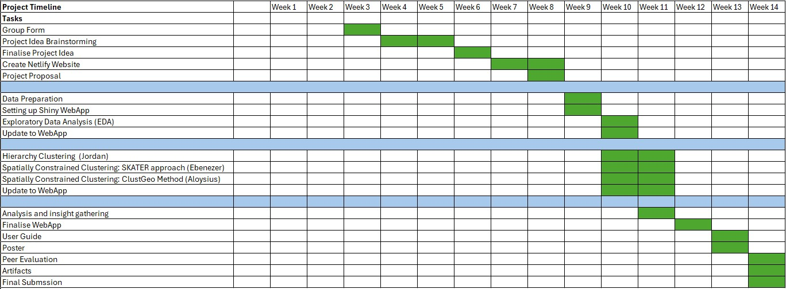